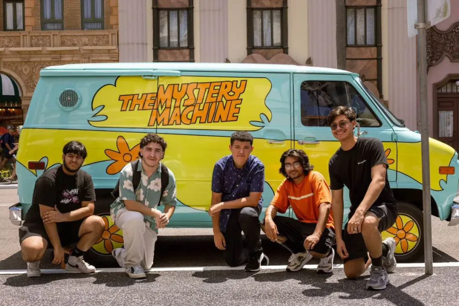
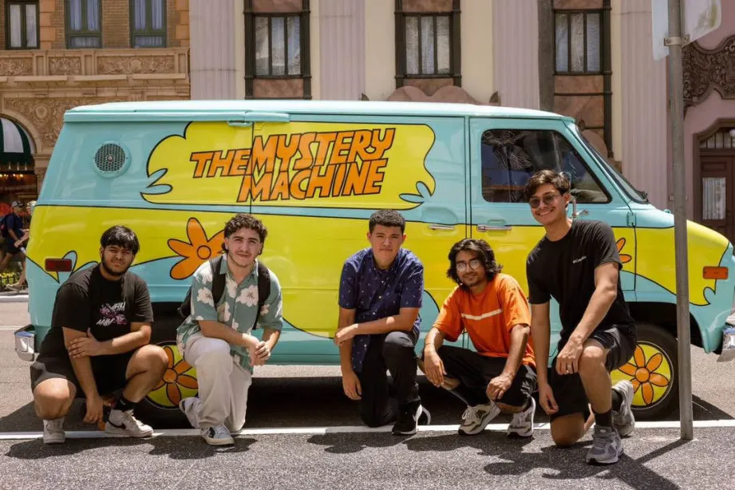

Engage in STEM Based activities and competitions that address multiple intrest areas such as engineering, leadership, and technology. Join the Lamar Consolidated TSA team and
help us continue to make a difference in the Technical world.
*Note this video was taken from the 2023-2024 On demand video Team for the national conference
*note these are not real sponsors for LCHS TSA
.png)
.png)
.png)
.png)
.png)
.png)
.png)
 

Who are we?
The Technology Student Association (TSA) is a national organization dedicated to fostering the creativity and innovation of students within the STEM fields—Science, Technology, Engineering, and Mathematics. TSA chapters empower students to go beyond traditional classroom learning through hands-on activities and the use of cutting-edge technology. Members have the opportunity to come together from around the globe to compete and participate in various challenges and contests, enhancing their skills and knowledge.
TSA not only prepares students for their future careers but also provides a platform for them to make lasting friendships and engage in exciting competitions. It’s a community where students can explore their interests, develop their talents, and build a foundation for future success in a fun and supportive environment.
At Lamar Consolidated High School (LCHS) TSA, we cultivate and engage students in their competitive events, fostering an environment where creativity and innovation thrive. LCHS TSA is a place where students can form lasting friendships and meaningful relationships while exploring their interests in STEM. We guarantee that you will enjoy your time and experience as a member of LCHS TSA. So don't wait any longer—join TSA today!
Join Now
Learn About our Success within the regional, state, and national competitions through out the years
Nationals:
- 4th Place Music Production
State:
- 1st Place On Demand Video
- 1st Place Music Production
- 1st place Manufactoring Prototype
- 1st Place Future Tech Teacher
- 2nd place Webmaster
- 3rd place Virtual Reality
Nationals:
- 3rd Place Drone
- 2nd Place Future Tech Teacher
- 8th Place Technology problem solving
- 7th place Fashion Design
State:
- 2nd place Drone
- 1st place future tech teacher
- 3rd place Senior Solar Sprint
Nationals:
- 8th place Technology problem solving
- 6th place System control
Nationals:
- 3rd place Scientific and Technical Visualization
- 10th place Animatronics
Nationals:
- 3rd place Engineering Design
- 3rd place Scientific and Technical Visualization
- 5th Place STEM Careers
- 8th Place System Control Technology
Nationals:
- 9th place Children's Stories
- 10th Place Scientific and Technical Visualization
Nationals:
- 4th place Children's Stories
- 10th Place Career Prep
- 10th Place Scientific and Technical visualization
Nationals:
- 1st place Scientific and technical Visualization
- 2nd Place Software Development
- 5th Place Webmaster
- 9th place Animatronics
Nationals:
- 10th Place SOftware Development
Nationals:
- 2nd Place Extemporaneous Presentation
- 3rd Place Debating Technological Issues
Nationals:
- 1st Place Scientific and Technological Visualization
- 6th Place Debating Technological issues
Nationals:
- 2nd Place Scientific and Technological Visualization
- 2nd Place Debating Technological issues
- 2nd Place Extemporaneous Presentation
- 8th Place Transportation Modeling
Nationals:
- 9th Place Scientific and Technological Visualization
- 10th Place Debating Technological issues
LCHS TSA welcomes donations and support from our community. Every contribution goes directly back into the club, enhancing and strengthening our chapter. By donating, you play a vital role in improving TSA, enabling us to offer better and more enjoyable activities for our members. Your generosity also helps cover travel expenses and general club fees for students who might not otherwise be able to participate. Together, we can ensure that all members have the opportunity to engage fully in our exciting events and competitions. So do your part and donate now!
Become a SponsorWe're excited to share with you the website for our local chapter of the Technology Student Association (TSA). If you haven't checked it out yet, you're in for a treat! Explore exciting activities, events, and fun moments from our competitions and challenges. You'll find details on upcoming events, meeting schedules, and ways to get involved. Plus, there's an option to donate and support our projects and growth.
Hey everyone! Follow our Instagram @Lamarconstsa to catch all the fun moments and stay up to date with our latest adventures. Whether we're exploring new places, trying out cool activities, or just having a blast with friends, you'll see it all. Don't miss out on the excitement—join us and be part of our journey!

Hey TSA Members! Themes are coming out in September. This is your reminder to stay up to date and visit the offical TSA Website to learn about your events or other upcoming activities.
.webp)